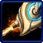
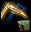

- Stats
- Abilities/Upgrades
- Strategy
- Lore
- Related
Armor: 1 |
 0/0 0 per second
0/0 0 per secondDamage: 15 (splash)
Attacks: 2
Cooldown: 1.65
Targets: Ground
Attack Range: 6 |
9 with  Extended Thermal Lances
Acceleration: 1000
Collision Radius: 1
Requirements: Levels 2-3 requires Twilight Council
| Level |  Level 1 Level 1 |  Level 2 Level 2 |  Level 3 Level 3 |
| Minerals |  100 100 | 150 | 200 |
| Vespene Gas |  100 100 | 150 | 200 |
| Time |  160 160 | 190 | 220 |
| Damage Bonus | +2 | +4 | +6 |
| Total Damage | 17 (x2) | 19 (x2) | 21 (x2) |
300Vespene Cost:
200Supply:
 6
6Produced From: Robotics Facility Build Time:
75Requirements: Robotics Bay
Warp Prism Size: 8
Unit Type: Armored, Mechanical, Massive, Ground
Requirements: Levels 2-3 requires Twilight Council
| Level |  Level 1 Level 1 |  Level 2 Level 2 |  Level 3 Level 3 |
| Minerals | 100 | 150 | 200 |
| Vespene Gas | 100 | 150 | 200 |
| Time | 160 | 190 | 220 |
| Armor Bonus | +1 | +2 | +3 |
| Total Armor | 2 | 3 | 4 |
Requirements: Levels 2-3 requires Twilight Council
| Level |  Level 1 Level 1 |  Level 2 Level 2 |  Level 3 Level 3 |
| Minerals | 150 | 225 | 300 |
| Vespene Gas | 150 | 225 | 300 |
| Time | 160 | 190 | 220 |
| Armor Bonus | +1 | +2 | +3 |
| Total Armor | 1 | 2 | 3 |
| Icon | Minerals | Vespene Gas | Research Time | Researched At |
|  | 0 | 0 | 0 | Already Researched |
Information: The long legs of the Colossus allows it to travel up and down cliffs that other ground units could not pass with ease. This allows the Colossus to easily go up and down sides of cliffs, but not through impassible terrain like water or destructible rocks.
The Colossus may only go up or down one layer of a cliff at a time. This prevents them from going up and down steep cliffs, or from going up or down more than one elevation change at once.
The long legs of the Colossus also means that they can pass over smaller units with ease and not distrupt pathing, and the same goes for smaller units that want to pass below the Colossus.
A side effect of having such long legs for mobility, it that the Colossus is also considered a 'flying' unit for attacks. This means that attacks that could only hit air can also hit the Colossus, since it is considered 'flying' for attacks. This also means it is revealed when attacking from high ground that an opponent could not otherwise see up.
| Icon | Minerals | Vespene Gas | Research Time | Researched At |
| 200 | 200 | 140 | Robotics Bay |
Information: Upon research of this ability, all Colossus have their range increased from 6 to 9, allowing them to attack targets much further than before.
Extended Thermal Lances is an important research for almost any Colossus usage. The extra range increases their survivability by a large amount, as this allows the Colossus to attack from a much safer distance against targets that would otherwise easily destroy it.
Extended Thermal Lances also helps when sieging an opponent, as this allows them to keep their distance from base defenses while still attacking. Much like a how a Siege Tank or Broodlord can siege an opponent while staying relatively2 safe
If you have any suggestions for more strategies, go ahead and post on the forums 'here'!
Shift Queue Blinking
Sometimes when you have a large amount of stalkers, blinking can become more difficult and not all stalkers will end up where intended. A way to help this is to queue up a move command (to have the stalkers in range to blink), then the blink, and then another move command (to move the stalkers in front out of the way).
+1 Weapons vs Zerglings
Sum text about how gosu this is
+1 Weapons vs Zerglings
Sum text about how gosu this is
- Overview
The colossus is an antiquated protoss war machine, dating back to the Kalath Intercession. It is a towering construct, striding across the battlefield on four tall, slender legs which give it an extremely high level of mobility. The great height of the machine allows it to step up and down cliffs and other steep elevations with little difficulty, and gives it a dominating field of fire.
The heavily armored hull of the colossus carries two powerful thermal lances: one mounted on each side of its body. Complex focusing and targeting systems are used to pinpoint the continuous damage output of the thermal lances for optimal efficiency. A colossus's beam cuts a fiery swathe of destruction through multiple enemies with each firing cycle, able to reduce a group of marines to ashes in an instant.
The colossus can be transported by the warp prism, which transforms it and other transported units into energy. The colossus is feared for being a war machine, and some protoss believe they cannot be controlled and could turn against them.
The colossus is unique in that it was created purely as a war machine, in contrast to most protoss automatons which were mainly created for industrial and/or resource gathering purposes. Such a trait was demonstrated by the mass slaughter carried out against the kalathi, appalling the protoss.
As such, the Conclave outlawed the manufacture of colossi, and existing machines were deactivated before being sealed away. Some were sent to distant asteroids and uninhabited moons. Others were stored on Aiur, some underwater, awaiting a reactivation signal. The war against the zerg, however, prompted the return of the colossi to the protoss arsenal. In 2503, the protoss began collecting them using coordinates collected from a preserver, hoping to use them in the fight against the zerg despite misgivings.
Source Information
Text information from the Starcraft Wiki.
Photo 1 created by Saejin Oh. Copyright: UDON Entertainment.
Photo 2 created by Samwise Didier. Copyright: Blizzard Entertainment.
| Protoss |
| Units |
| Nexus | Probe | Mothership |